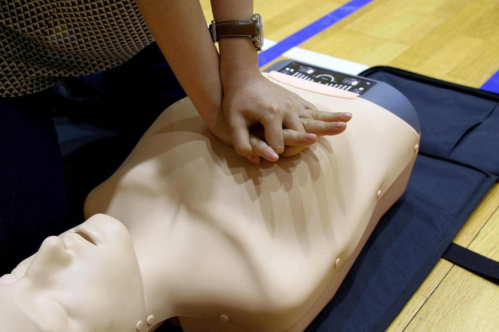
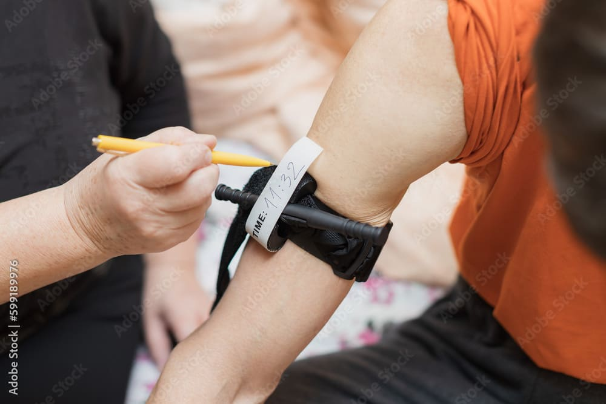
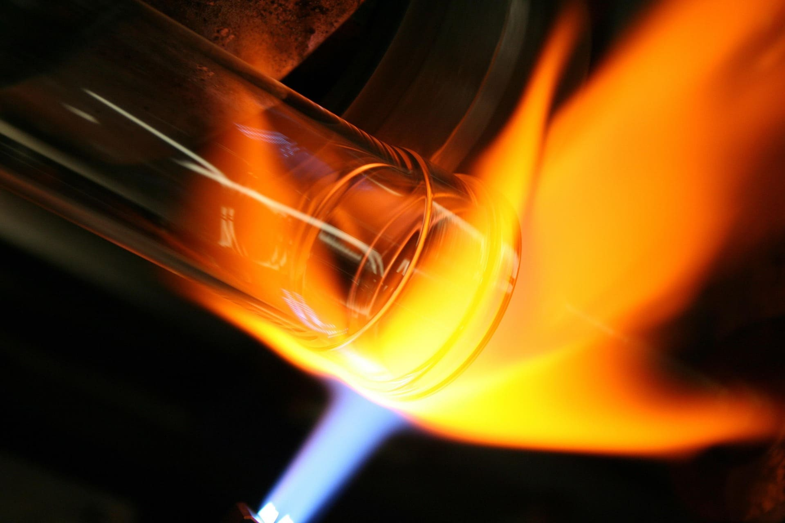
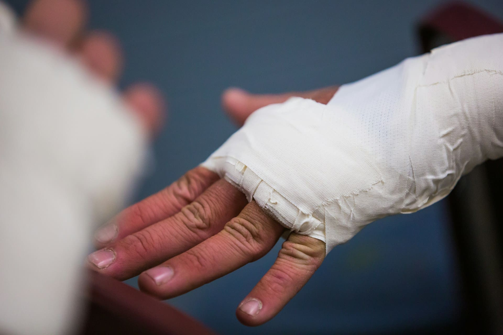

реанимация 
01 Как привести человека в чувства?
- Обморок: Смочить лицо водой, дать понюхать нашатырь.
- Искусственное дыхание: Запрокинуть голову, вдохнуть в рот пострадавшего 16–18 раз/мин.
- Массаж сердца: На нижней трети грудины: 60 нажатий/мин (дети — одной рукой, младенцы — двумя пальцами, 100–110 раз/мин). Только в сочетании с дыханием.

кровотечение
02Как остановить кровотечение?
- Артериальное: Наложить жгут выше раны, прижать сосуд. Максимальное время нахождения жгута на конечности не должно превышать 60 минут в теплое время года и 30 минут в холодное. Если максимальное время наложения жгута истекло, а медицинская помощь недоступна, следует сделать следующее: осуществить пальцевое прижатие артерии выше жгута; снять жгут на 15 минут; по возможности выполнить лёгкий массаж конечности, на которую был наложен жгут; наложить жгут чуть выше предыдущего места наложения; максимальное время повторного наложения – 15 минут. Если кровь не остановлена можно использовать числую холодную золу как антисептик, а чистый тканевый валик, паутину или мох как губки для впитывания крови, наложить их и не убирать, чтобы не открывать нового кровотечения.
- Венозное: Давящая повязка.
- Капиллярное: Антисептик, стерильная повязка.

отравление и ожоги
03Как справиться с ожогами и отравлением?
- Отравление химическими веществами: Надеть противогаз или мокрую ткань на лицо.
- Химический ожог: Обильно промыть водой. При кислоте — содовый раствор. При щелочи — раствор уксуса.
- Отравление угарным газом: Вынести пострадавшего на свежий воздух.
- Электротравма: Обесточить источник, использовать резину, сухое дерево, вытаскивать за неплотную одежду.
- Термический ожог: Убрать источник тепла, сбить пламя: засыпать снегом, водой, землёй, песком или накрыть плотной тканью. Промыть холодной водой, если появились волдыри опустить повреждённую поверхность в воду. Если волдыри лопнут наложить повязку.

физические повреждения
04Как лечить физические повреждения?
- Переломы:
- Закрытый: наложить шину, обездвижить место, приложить холод.
- Открытый: стерильная повязка, остановка кровотечения, обездвиживание.
- Вывих: Иммобилизовать сустав, приложить холод.
- Разрыв связок: Тугая повязка, холод, покой.
- Растяжение: Бинт, холод, приподнятая конечность, без нагрузки.
- Ушибы: Приложить лёд или холодный предмет для снятия отека и боли.
